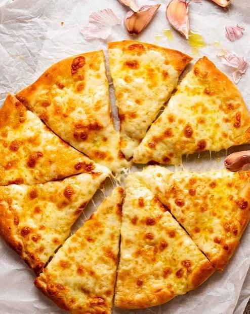

Inicio
Pizza Casera

Descripción
Esta es una receta clásica, ideal para preparar el fin de semana. La masa queda crujiente por fuera y suave por dentro.
Puedes personalizar los ingredientes de la cubierta según tus preferencias personales.
Ingredientes
- 500g de harina de trigo
- Levadura fresca
- Salsa de tomate
- Queso mozzarella
Pasos
- Mezclar la harina con el agua y la levadura para formar la masa.
- Dejar reposar la masa durante una hora.
- Estirar la masa, agregar la salsa y el queso.
- Hornear a temperatura alta durante 15 minutos.